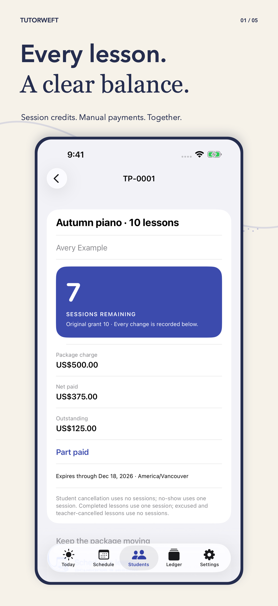
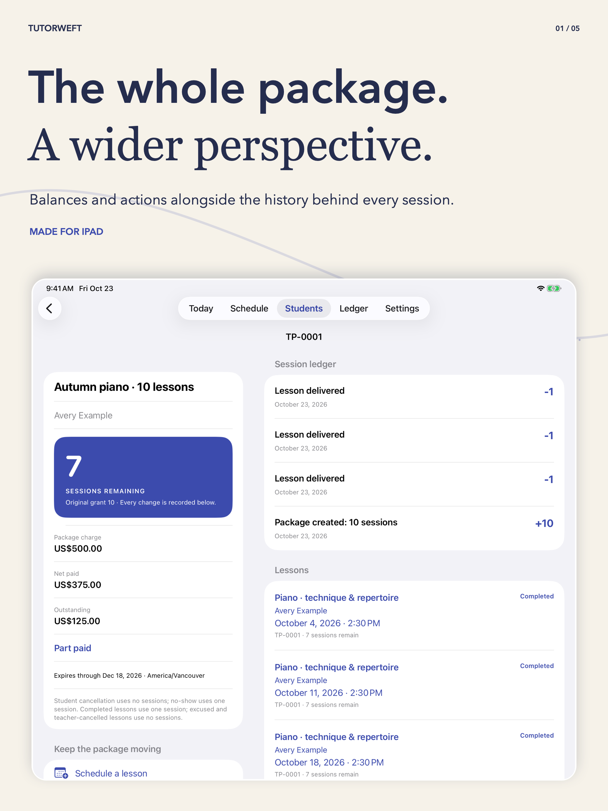

Give each package a starting point.
Choose the sessions, quoted amount, currency and cancellation policy. Keep session credits separate from money.
For independent tutors & music teachers
Keep the package behind each lesson in view. Sessions remaining, attendance decisions and recorded payments, with a history you can follow.
Waiting for App Store review · Submitted October 23, 2026

A teaching practice, with a thread
Choose the sessions, quoted amount, currency and cancellation policy. Keep session credits separate from money.
Record attendance once. Correct an outcome with a reason, reschedule the same lesson or carry unused sessions into a linked new package.
Preview the session history and recorded balance, then save or share a PDF. Private lesson notes stay off by default.
From the app
Authentic app screens with fictional teaching records. Select any frame to inspect it full size.
Made for your iPad, too
A dedicated two-column package layout keeps balances and actions alongside session history and lessons. Documents support A4 and US Letter.

Start on Free
Archive students to preserve their history without using the active allowance.
Optional Annual or Lifetime Pro
The app shows Apple’s localized prices. Annual Pro auto-renews unless cancelled. Lifetime is a one-time purchase and does not cancel an existing annual subscription.
On your device
No developer backend, advertising, analytics or tracking. Apple manages purchases. Exports go where you choose; device backups follow your Apple settings.
Manual records do not process money, verify bank settlement or create tax invoices. Tutorweft has no parent portal, messaging or cloud sync.